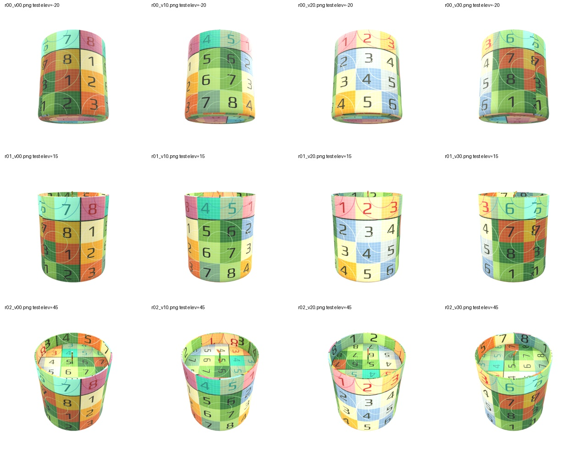
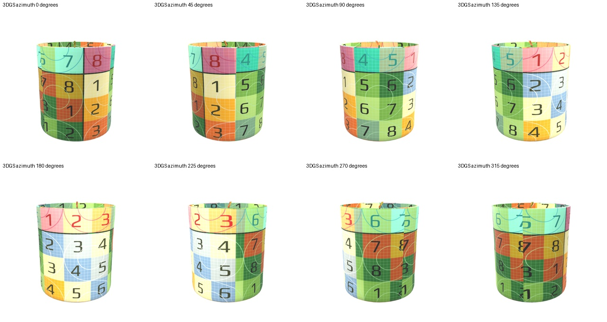
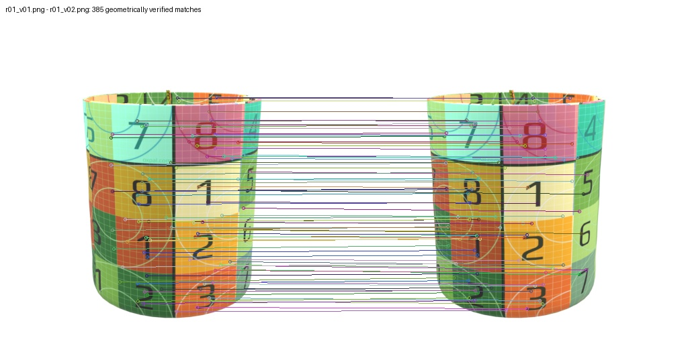
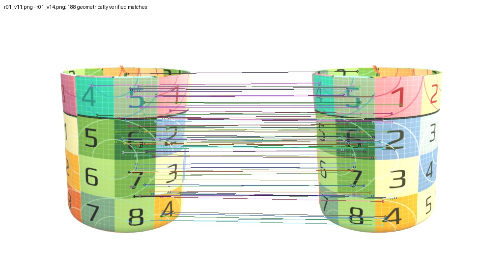
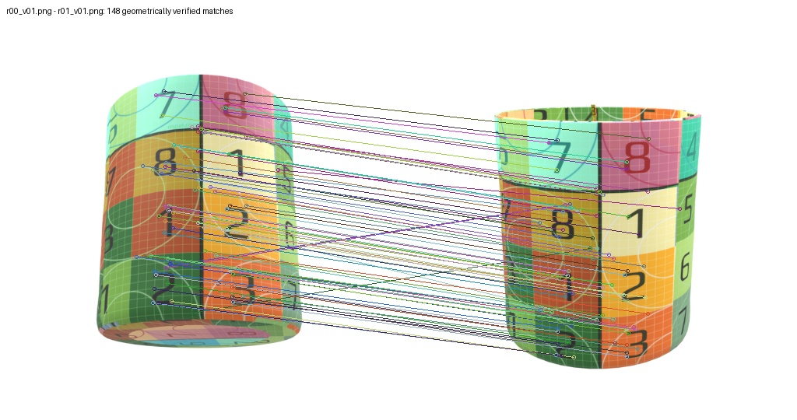
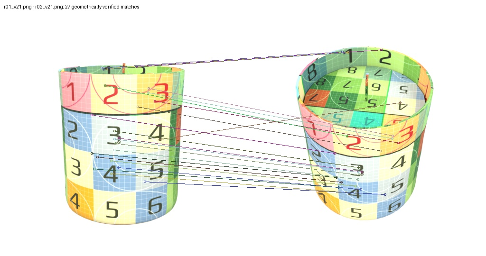

UID：d9f66a5fd13945429f1a1896c1102e9f · SfM 初始化 → 官方 3DGS

96 张训练 / 24 张测试；相机注册 96/96；稀疏点 8,562；重投影误差 0.336 px。
30,000 步，178,410 个高斯；全图 PSNR 38.909 dB，SSIM 0.99153，前景 PSNR 34.476 dB。


每张图最多画 80 条线，标题和下表记录全部几何验证内点数量。
r01_v01.png ↔ r01_v02.png：385 个内点。

r01_v11.png ↔ r01_v14.png：188 个内点。

r00_v01.png ↔ r01_v01.png：148 个内点。

r01_v21.png ↔ r02_v21.png：27 个内点。

点击视角可查看真实图像、预测图像及放大的误差。
| 视角 | 前景 PSNR | 全图 PSNR | SSIM |
|---|---|---|---|
| r00_v00.png | 38.335 | 42.773 | 0.99536 |
| r00_v05.png | 37.647 | 41.349 | 0.99445 |
| r00_v10.png | 33.745 | 38.447 | 0.98873 |
| r00_v15.png | 34.276 | 38.692 | 0.99180 |
| r00_v20.png | 32.093 | 36.723 | 0.98914 |
| r00_v25.png | 35.827 | 39.998 | 0.99297 |
| r00_v30.png | 37.282 | 41.642 | 0.99320 |
| r00_v35.png | 35.874 | 40.483 | 0.99189 |
| r01_v00.png | 35.481 | 39.801 | 0.99385 |
| r01_v05.png | 34.265 | 38.023 | 0.99137 |
| r01_v10.png | 33.511 | 37.906 | 0.98911 |
| r01_v15.png | 35.381 | 39.940 | 0.99361 |
| r01_v20.png | 32.151 | 36.911 | 0.99082 |
| r01_v25.png | 33.993 | 38.323 | 0.99127 |
| r01_v30.png | 33.058 | 37.846 | 0.99025 |
| r01_v35.png | 37.104 | 41.303 | 0.99426 |
| r02_v00.png | 35.106 | 39.543 | 0.99364 |
| r02_v05.png | 33.542 | 38.132 | 0.99096 |
| r02_v10.png | 34.846 | 39.534 | 0.99263 |
| r02_v15.png | 32.284 | 36.896 | 0.98899 |
| r02_v20.png | 31.156 | 35.798 | 0.98776 |
| r02_v25.png | 33.459 | 37.800 | 0.99063 |
| r02_v30.png | 33.158 | 37.842 | 0.98951 |
| r02_v35.png | 33.840 | 38.109 | 0.99062 |
7,000 步前景 PSNR：32.750 dB。7k 对照图 · 30k 同视角对照图。
| 独立测试高度 | 视角数 | 前景 PSNR | 全图 PSNR | 示例 |
|---|---|---|---|---|
| 0° | 12 | 32.827 | 37.631 | 对照图 |
| 30° | 12 | 31.143 | 35.827 | 对照图 |
| 60° | 12 | 29.452 | 34.546 | 对照图 |
0°/30°位于训练高度之间，60°超过训练最高高度。所有测试图像未参与训练。逐视角指标
本页为可提交的紧凑结果。原始数据、SQLite 数据库、高斯 PLY、训练检查点和全部 PNG 保存在本地 outputs/ 对应目录。